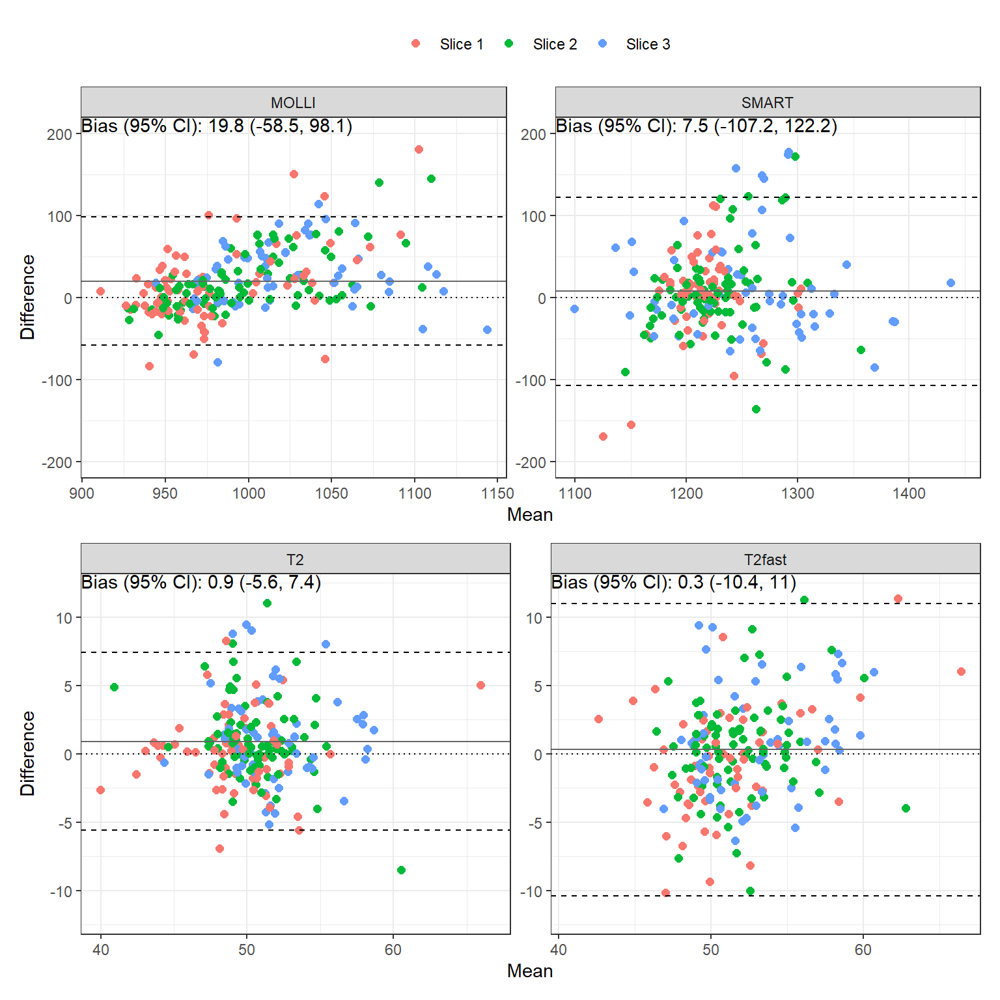
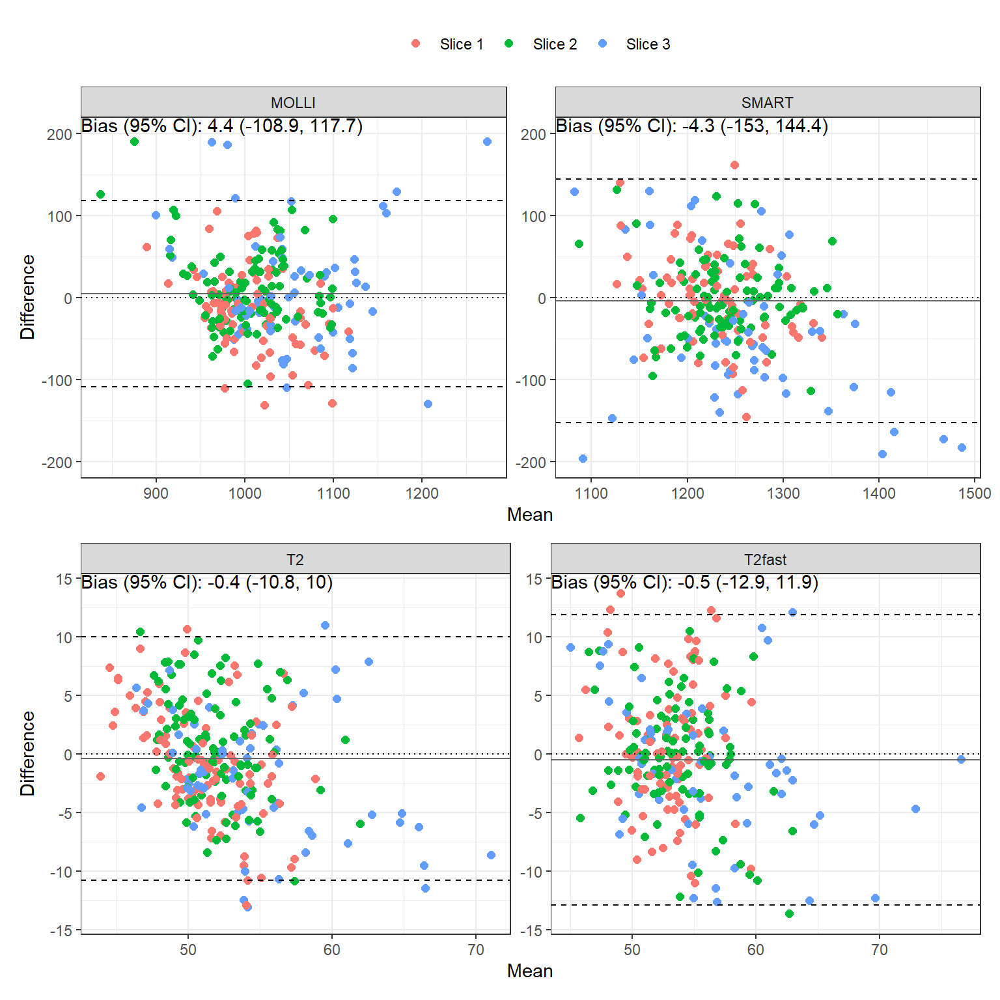
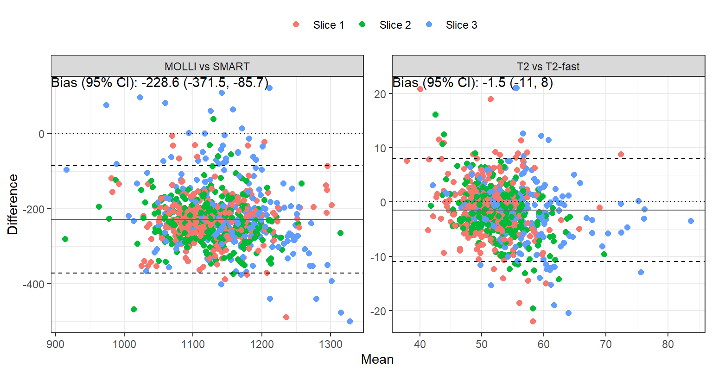
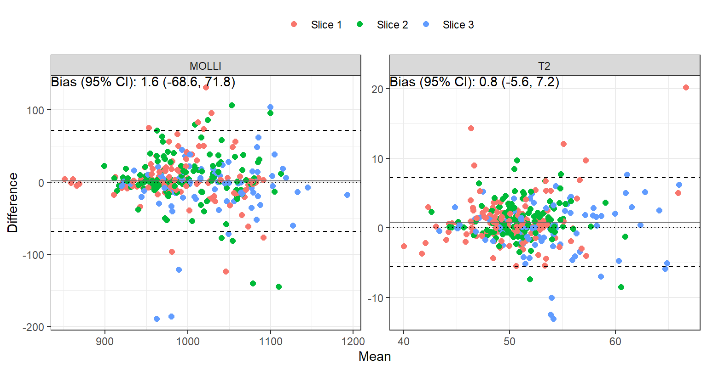

| Female (N=28) | Male (N=22) | ||
|---|---|---|---|
| Age (years) | median (IQR) | 44.5 (31, 62.25) | 41 (32.5, 53) |
| 20-29 | 5 (17.9%) | 5 (22.7%) | |
| 30-39 | 5 (17.9%) | 5 (22.7%) | |
| 40-49 | 5 (17.9%) | 6 (27.3%) | |
| 50-59 | 5 (17.9%) | 2 (9.1%) | |
| 60-69 | 8 (28.6%) | 4 (18.2%) |
Cardiac T1 and T2 Mapping at 1.5T: Nomograms and Evaluation of Deep Learning Reconstruction
Statistical analysis
Age- and gender-specific upper and lower ranges within each slice were calculated as the mean plus and minus 2 standard deviations of the normal data, respectively. Differences by age, gender, and slice were assessed by three-way repeated measures ANOVA. Repeatability and reproducibility were assessed by the intra-class correlation coefficient (ICC) (Fleiss 1971), repeatability/reproducibiliy coefficient, and Bland-Altman analysis. P-values < 0.05 were considered statistically significant. All analyses were performed in R version 4.3.2 (R Foundation for Statistical Computing, Vienna, Austria).
Subject characteristics
Age- and gender-specific reference ranges
- Slice 1: AHA1 – AHA6, Sept1
- Slice 2: AHA7 – AHA12, Sept2
- Slice 3: AHA13 – AHA16, Sept3
T1 measurements
The gender- and age-specific mean values and 95% ranges are summarized for each segment for MOLLI and SMART in Table 2 and Table 3.
| map | name | Female | Male | P |
|---|---|---|---|---|
| MOLLI | aha1 | (896.5, 1138.7) | (871.7, 1036.8) | <0.001 |
| MOLLI | aha2 | (932.8, 1143.9) | (903.2, 1063.8) | <0.001 |
| MOLLI | aha3 | (927.7, 1129.8) | (897.9, 1046.1) | <0.001 |
| MOLLI | aha4 | (905.5, 1171.1) | (905.2, 1048.3) | <0.001 |
| MOLLI | aha5 | (906.7, 1136.1) | (911.5, 1030.1) | <0.001 |
| MOLLI | aha6 | (896.7, 1133.4) | (874.1, 1049.8) | <0.001 |
| MOLLI | aha7 | (915.1, 1139.2) | (855.3, 1052.4) | <0.001 |
| MOLLI | aha8 | (951.3, 1120.8) | (904.9, 1062.1) | <0.001 |
| MOLLI | aha9 | (961.8, 1102.9) | (918.7, 1039.3) | <0.001 |
| MOLLI | aha10 | (948, 1110.6) | (916.3, 1034.4) | <0.001 |
| MOLLI | aha11 | (926.2, 1119.4) | (910.1, 1038.8) | <0.001 |
| MOLLI | aha12 | (924.9, 1140) | (862.1, 1068.2) | <0.001 |
| MOLLI | aha13 | (904.4, 1241.4) | (896, 1111.8) | <0.001 |
| MOLLI | aha14 | (978.5, 1157.8) | (918.5, 1081.7) | <0.001 |
| MOLLI | aha15 | (946.6, 1169.3) | (895.1, 1083.1) | <0.001 |
| MOLLI | aha16 | (912.8, 1274.2) | (903.7, 1148.2) | 0.002 |
| MOLLI | sept_1_mean | (932.4, 1133.2) | (904.2, 1051.3) | <0.001 |
| MOLLI | sept_2_mean | (946.6, 1110.5) | (909.5, 1051.2) | <0.001 |
| MOLLI | sept_3_mean | (979.6, 1167.1) | (919.5, 1084.6) | <0.001 |
| SMART | aha1 | (1123.5, 1322.3) | (1112.1, 1281.1) | 0.031 |
| SMART | aha2 | (1178, 1355) | (1163.4, 1298.9) | 0.002 |
| SMART | aha3 | (1175.4, 1376.1) | (1141.1, 1318.4) | <0.001 |
| SMART | aha4 | (1119.6, 1410.1) | (1132.5, 1285.6) | 0.001 |
| SMART | aha5 | (1081.1, 1420.5) | (1121.7, 1285.1) | 0.006 |
| SMART | aha6 | (1108.7, 1355) | (1086.5, 1297.3) | 0.008 |
| SMART | aha7 | (1149, 1311.9) | (1102.9, 1285) | 0.001 |
| SMART | aha8 | (1198.2, 1364.6) | (1165.1, 1316.8) | <0.001 |
| SMART | aha9 | (1180.6, 1369.8) | (1142, 1317.4) | <0.001 |
| SMART | aha10 | (1132.6, 1366.4) | (1135.2, 1278) | 0.002 |
| SMART | aha11 | (1114.8, 1379.8) | (1118, 1290.3) | 0.004 |
| SMART | aha12 | (1122.7, 1353.1) | (1081.4, 1294.2) | <0.001 |
| SMART | aha13 | (1059.8, 1406.2) | (1103.4, 1319.8) | 0.2 |
| SMART | aha14 | (1181, 1461.2) | (1154.8, 1384) | 0.001 |
| SMART | aha15 | (1071.7, 1461.4) | (1098.9, 1318.5) | 0.002 |
| SMART | aha16 | (1012.6, 1448.3) | (1000.6, 1348.3) | 0.01 |
| SMART | sept_1_mean | (1187, 1349.7) | (1158.5, 1296.7) | <0.001 |
| SMART | sept_2_mean | (1190, 1362) | (1149.5, 1332.7) | 0.004 |
| SMART | sept_3_mean | (1182.3, 1463.9) | (1153.7, 1374.9) | <0.001 |
| map | name | 20-29 | 30-39 | 40-49 | 50-59 | 60-69 | P |
|---|---|---|---|---|---|---|---|
| MOLLI | aha1 | (839.6, 1156.3) | (881.4, 1072.3) | (843.1, 1136) | (893.5, 1103.2) | (882.1, 1072) | 0.638 |
| MOLLI | aha2 | (907.3, 1079.1) | (906.8, 1104.7) | (885.9, 1154.2) | (933.1, 1111.5) | (904, 1150.1) | 0.763 |
| MOLLI | aha3 | (892.5, 1071.1) | (926.4, 1068.8) | (870.2, 1153.2) | (912.1, 1084.6) | (898.6, 1136.6) | 0.612 |
| MOLLI | aha4 | (852.2, 1118.3) | (924, 1083.2) | (879.4, 1161.8) | (920.9, 1095.4) | (880.7, 1174) | 0.684 |
| MOLLI | aha5 | (892.4, 1059.8) | (906.8, 1077.3) | (903.4, 1101.9) | (884.2, 1136.9) | (884.9, 1146.1) | 0.836 |
| MOLLI | aha6 | (888.7, 1073) | (883, 1087.9) | (858.7, 1109.9) | (846.8, 1155.7) | (867.6, 1135.8) | 0.99 |
| MOLLI | aha7 | (879.8, 1143.7) | (850, 1119.4) | (874, 1098.7) | (893.5, 1073.5) | (851.8, 1152.9) | 0.641 |
| MOLLI | aha8 | (923.3, 1096.6) | (920.3, 1088.3) | (919.6, 1118) | (944.9, 1109.4) | (887.6, 1139.6) | 0.862 |
| MOLLI | aha9 | (917.9, 1087) | (932.8, 1071) | (913.5, 1122.5) | (952.5, 1102.3) | (918.3, 1090.9) | 0.597 |
| MOLLI | aha10 | (911.9, 1070.7) | (942.6, 1050.8) | (896.1, 1116.1) | (945.5, 1091.4) | (913.1, 1124) | 0.876 |
| MOLLI | aha11 | (916, 1068.3) | (897.6, 1100.8) | (883.9, 1107.7) | (939.2, 1116) | (906, 1111.3) | 0.869 |
| MOLLI | aha12 | (926, 1090.3) | (825.8, 1157) | (875.4, 1138.5) | (889.9, 1158.7) | (888.3, 1099.5) | 0.251 |
| MOLLI | aha13 | (906.7, 1188.9) | (895, 1151.6) | (874.8, 1189.5) | (889.6, 1168.6) | (863.6, 1287.7) | 0.355 |
| MOLLI | aha14 | (928.4, 1137.2) | (930.5, 1124.2) | (924.9, 1167.2) | (961.1, 1136.8) | (910.7, 1174) | 0.914 |
| MOLLI | aha15 | (898, 1138.5) | (914.1, 1085.3) | (897.7, 1146.4) | (947.6, 1168.6) | (884.9, 1190) | 0.801 |
| MOLLI | aha16 | (938.8, 1178.5) | (883.1, 1197.8) | (919.1, 1184.2) | (911.8, 1261.6) | (845.3, 1340) | 0.578 |
| MOLLI | sept_1_mean | (906.4, 1070.8) | (917.4, 1087.2) | (881.3, 1146.9) | (924.5, 1093.8) | (900.9, 1144.2) | 0.698 |
| MOLLI | sept_2_mean | (920.6, 1090.8) | (922.2, 1080.4) | (921.6, 1104.3) | (933.1, 1126.3) | (895, 1102.5) | 0.494 |
| MOLLI | sept_3_mean | (930.5, 1137.2) | (936.4, 1140.2) | (925.6, 1164.3) | (959.3, 1137) | (900.4, 1195.8) | 0.887 |
| SMART | aha1 | (1075.1, 1323.6) | (1149.5, 1268.4) | (1096.8, 1319) | (1110.6, 1323.6) | (1155, 1295.4) | 0.493 |
| SMART | aha2 | (1138.9, 1330.1) | (1183.7, 1295) | (1143.8, 1359.8) | (1176.5, 1337) | (1197.7, 1347.7) | 0.882 |
| SMART | aha3 | (1159.9, 1330.1) | (1146.7, 1326.2) | (1130.1, 1387.4) | (1142.8, 1403.3) | (1162.6, 1363.4) | 0.94 |
| SMART | aha4 | (1144.1, 1290.1) | (1105.5, 1349.5) | (1097.3, 1372.6) | (1094.9, 1442.2) | (1111.4, 1388.3) | 0.552 |
| SMART | aha5 | (1044.5, 1441.1) | (1127.6, 1285.6) | (1118.3, 1323.4) | (1133.4, 1374.6) | (1066.5, 1391.1) | 0.322 |
| SMART | aha6 | (1143.5, 1285.7) | (1113.7, 1284.9) | (1080, 1333) | (1056.3, 1410.7) | (1067.9, 1369.5) | 0.881 |
| SMART | aha7 | (1138.1, 1287.8) | (1137.9, 1260.2) | (1066.2, 1340.3) | (1152.8, 1303) | (1136.3, 1330.9) | 0.261 |
| SMART | aha8 | (1166.3, 1343.2) | (1192.8, 1309.3) | (1151.8, 1371.9) | (1190.7, 1343.6) | (1187.2, 1384.3) | 0.842 |
| SMART | aha9 | (1154, 1351.4) | (1143.8, 1335.5) | (1132.4, 1365.4) | (1137.7, 1387.8) | (1178.9, 1355.8) | 0.821 |
| SMART | aha10 | (1131.5, 1314.6) | (1132.5, 1276.3) | (1099.7, 1311.2) | (1106.9, 1401.5) | (1170.5, 1346.9) | 0.105 |
| SMART | aha11 | (1088.1, 1379.1) | (1107.9, 1280.4) | (1155.3, 1280) | (1107.8, 1369.9) | (1116.3, 1379.3) | 0.176 |
| SMART | aha12 | (1129.8, 1327.7) | (1044.8, 1360.5) | (1092.2, 1315.6) | (1150.3, 1341.3) | (1093.2, 1323.3) | 0.284 |
| SMART | aha13 | (1101, 1425.8) | (1077.4, 1302.9) | (1073.9, 1345.6) | (1008.5, 1430.3) | (1121, 1334.9) | 0.058 |
| SMART | aha14 | (1124.4, 1494.2) | (1189.1, 1378.4) | (1179, 1387.3) | (1193.2, 1423.6) | (1149.5, 1467.8) | 0.724 |
| SMART | aha15 | (1070.8, 1489.7) | (1091.5, 1339.9) | (1087.3, 1314.6) | (1080.9, 1383.4) | (1070.5, 1434.4) | 0.085 |
| SMART | aha16 | (1049.7, 1479.5) | (1027.2, 1341.4) | (1017.5, 1341.1) | (952, 1413.2) | (967, 1425.6) | 0.186 |
| SMART | sept_1_mean | (1158.4, 1332.9) | (1177.7, 1287.2) | (1149.4, 1341.4) | (1155.1, 1364.9) | (1182.6, 1349.8) | 0.884 |
| SMART | sept_2_mean | (1165.2, 1344.1) | (1193.1, 1308.2) | (1141, 1376.5) | (1151.6, 1354.7) | (1175.5, 1387.1) | 0.618 |
| SMART | sept_3_mean | (1129.7, 1483.3) | (1187.3, 1374.3) | (1177.2, 1380.9) | (1184.4, 1426.3) | (1142.3, 1485.1) | 0.403 |
Three-way ANOVA test (Table 4) confirms that gender and slice differences are significant, and that age difference is not.
| Age | Gender | Slice | |
|---|---|---|---|
| MOLLI | 0.864 | <0.001 | <0.001 |
| SMART | 0.407 | <0.001 | <0.001 |
| Slice 1 | Slice 2 | Slice 3 | |
|---|---|---|---|
| MOLLI | <0.001 | 0.013 | <0.001 |
| SMART | <0.001 | <0.001 | <0.001 |
T2 measurements
The gender- and age-specific mean values and 95% ranges are summarized for each segment for T2 and T2-fast in Table 6 and Table 7.
| map | name | Female | Male | P |
|---|---|---|---|---|
| T2 | aha1 | (43.4, 59.8) | (43.8, 57.1) | 0.231 |
| T2 | aha2 | (43.2, 58.6) | (43.5, 56.8) | 0.452 |
| T2 | aha3 | (39.6, 62.5) | (43.3, 53.9) | 0.016 |
| T2 | aha4 | (42.7, 61.4) | (43.3, 57.6) | 0.164 |
| T2 | aha5 | (42.8, 60) | (41.7, 57.1) | 0.142 |
| T2 | aha6 | (42.3, 61.3) | (44.6, 54.4) | 0.029 |
| T2 | aha7 | (44.2, 62.6) | (46.6, 56.5) | 0.028 |
| T2 | aha8 | (44.4, 60.6) | (45, 58.3) | 0.434 |
| T2 | aha9 | (45.6, 57.8) | (46.2, 55.2) | 0.119 |
| T2 | aha10 | (43.7, 57.9) | (43.8, 55.6) | 0.154 |
| T2 | aha11 | (44.7, 58) | (43.2, 57.5) | 0.275 |
| T2 | aha12 | (46.2, 60.1) | (47, 55) | 0.003 |
| T2 | aha13 | (43.6, 68.1) | (43.7, 62.8) | 0.053 |
| T2 | aha14 | (43, 70.2) | (44.8, 62.1) | 0.023 |
| T2 | aha15 | (42, 65.2) | (41.7, 60.5) | 0.079 |
| T2 | aha16 | (43, 67.7) | (43.5, 61.5) | 0.048 |
| T2 | sept_1_mean | (39.6, 62.1) | (44, 53.9) | 0.054 |
| T2 | sept_2_mean | (44.5, 58.7) | (44.8, 57) | 0.488 |
| T2 | sept_3_mean | (42.3, 70) | (43.4, 62.9) | 0.042 |
| T2fast | aha1 | (44, 59.7) | (45.1, 56.1) | 0.107 |
| T2fast | aha2 | (42.9, 60.6) | (42.3, 58.8) | 0.368 |
| T2fast | aha3 | (43.8, 65.8) | (44.9, 59.2) | 0.026 |
| T2fast | aha4 | (42.3, 68.3) | (42.5, 64.3) | 0.233 |
| T2fast | aha5 | (43.1, 63.6) | (38.1, 63) | 0.077 |
| T2fast | aha6 | (41, 63.8) | (39.8, 60.4) | 0.159 |
| T2fast | aha7 | (42.1, 66.2) | (46.5, 56.9) | 0.026 |
| T2fast | aha8 | (43.5, 63.9) | (42.8, 61.4) | 0.298 |
| T2fast | aha9 | (44.1, 63.9) | (44.9, 61.4) | 0.522 |
| T2fast | aha10 | (43, 65) | (46.4, 58.2) | 0.18 |
| T2fast | aha11 | (42.3, 63.6) | (43.7, 60.5) | 0.677 |
| T2fast | aha12 | (46, 62.9) | (46.4, 57.3) | 0.008 |
| T2fast | aha13 | (42.2, 73.8) | (43.7, 63.3) | 0.009 |
| T2fast | aha14 | (43, 72.6) | (42.3, 63.8) | 0.008 |
| T2fast | aha15 | (43.7, 72.1) | (43, 63) | 0.006 |
| T2fast | aha16 | (44.2, 72.3) | (46.2, 62.8) | 0.021 |
| T2fast | sept_1_mean | (43.5, 62.6) | (45, 57.2) | 0.079 |
| T2fast | sept_2_mean | (43.5, 63.2) | (44.2, 60.6) | 0.483 |
| T2fast | sept_3_mean | (42.6, 73.5) | (41.7, 63.5) | 0.003 |
| map | name | 20-29 | 30-39 | 40-49 | 50-59 | 60-69 | P |
|---|---|---|---|---|---|---|---|
| T2 | aha1 | (42.8, 59) | (46.3, 55.4) | (45.2, 55) | (41.9, 57) | (43.2, 62.4) | 0.182 |
| T2 | aha2 | (41.5, 57.8) | (43.5, 57) | (44.3, 57.4) | (42.8, 55.2) | (45.2, 59.1) | 0.163 |
| T2 | aha3 | (37.7, 63.4) | (45, 54.7) | (43.1, 54.8) | (40.5, 54.1) | (40.9, 61.3) | 0.279 |
| T2 | aha4 | (41.8, 57.5) | (46, 58.2) | (45.2, 55) | (39.5, 59.8) | (44.6, 63.2) | 0.019 |
| T2 | aha5 | (40.9, 55) | (41.7, 54.9) | (43.1, 57.9) | (43, 58.7) | (46.8, 61.1) | 0.023 |
| T2 | aha6 | (40.8, 57.8) | (42.2, 56) | (44.4, 55.6) | (41.2, 60.5) | (48.1, 58.9) | 0.004 |
| T2 | aha7 | (46.1, 59.5) | (45.7, 57.3) | (46.7, 58.5) | (42.7, 57) | (45, 64.5) | 0.007 |
| T2 | aha8 | (45.6, 57.1) | (46.6, 56.8) | (44.8, 59.3) | (43.1, 56.4) | (45.3, 63.8) | 0.016 |
| T2 | aha9 | (46, 56.8) | (45.9, 55.2) | (45.9, 56.5) | (44.8, 55.3) | (46.4, 58.5) | 0.148 |
| T2 | aha10 | (41.5, 59.5) | (45.1, 54.4) | (44.3, 54.5) | (45.3, 52.6) | (45.5, 58.8) | 0.027 |
| T2 | aha11 | (41.3, 56.9) | (44.4, 56.7) | (46.8, 55.8) | (45.4, 55) | (45.5, 60.4) | 0.024 |
| T2 | aha12 | (46.7, 58.4) | (46, 56.2) | (46, 56.3) | (45.9, 55.4) | (47.9, 60.9) | 0.002 |
| T2 | aha13 | (44.3, 64.4) | (45.4, 62.6) | (45.5, 61.5) | (38.9, 63) | (45.9, 71.9) | 0.003 |
| T2 | aha14 | (44.3, 66.3) | (46.5, 60.5) | (46.3, 62) | (41.4, 59.9) | (45.5, 74.8) | <0.001 |
| T2 | aha15 | (43.4, 59.2) | (44, 57.6) | (45.6, 55.9) | (47.2, 54) | (41.5, 73.4) | 0.001 |
| T2 | aha16 | (43, 64.4) | (43.5, 63.3) | (45, 61.7) | (44.6, 57.9) | (42.1, 72.3) | 0.147 |
| T2 | sept_1_mean | (34.8, 65.5) | (46.1, 53.2) | (44.5, 54.9) | (43.2, 52.9) | (43.9, 58.1) | 0.537 |
| T2 | sept_2_mean | (45.1, 56.2) | (44.4, 56.6) | (45.1, 57.6) | (44, 55.6) | (46, 60.9) | 0.024 |
| T2 | sept_3_mean | (43.4, 66.7) | (46.6, 58.1) | (45.3, 61.6) | (41.1, 60) | (45, 75.6) | <0.001 |
| T2fast | aha1 | (42.4, 57.9) | (46.2, 57) | (46.3, 58.6) | (41.2, 56.6) | (46.9, 58) | 0.028 |
| T2fast | aha2 | (38.1, 60.7) | (44.4, 58.5) | (46.2, 57) | (40.5, 63) | (45.1, 58.9) | 0.713 |
| T2fast | aha3 | (41.5, 65.8) | (45.1, 62.2) | (46.1, 59.7) | (39.1, 67.4) | (46.1, 61.5) | 0.92 |
| T2fast | aha4 | (39.1, 63.7) | (46.3, 62.8) | (46.7, 67.4) | (37.8, 68.1) | (43.9, 68.1) | 0.065 |
| T2fast | aha5 | (34.5, 64.6) | (43, 59.7) | (45.4, 62.8) | (40.2, 62.5) | (43.1, 64.8) | 0.242 |
| T2fast | aha6 | (35.4, 63.9) | (41.7, 57.8) | (43.5, 61.6) | (39.9, 59.6) | (44.4, 63.9) | 0.194 |
| T2fast | aha7 | (45.1, 59.4) | (43.3, 60.9) | (46.2, 62.4) | (42.3, 56.5) | (43.1, 68.8) | 0.001 |
| T2fast | aha8 | (42.4, 60.5) | (44.5, 61.1) | (42.7, 62.2) | (40.4, 62.1) | (46.6, 66.1) | 0.079 |
| T2fast | aha9 | (43.8, 63.3) | (45.6, 60.3) | (46.1, 58.4) | (43.6, 62.7) | (44.2, 67.4) | 0.294 |
| T2fast | aha10 | (44.3, 62.1) | (43.2, 59.7) | (46, 60.6) | (39.7, 62.8) | (47.7, 64.6) | 0.044 |
| T2fast | aha11 | (42, 60.5) | (40.7, 62.1) | (45.4, 60.8) | (41.7, 61.2) | (46.2, 64.5) | 0.179 |
| T2fast | aha12 | (45.7, 60.9) | (45.9, 58) | (46.4, 60.9) | (44.6, 58.7) | (46.5, 64.2) | 0.133 |
| T2fast | aha13 | (43.3, 67.2) | (46.2, 63.2) | (41.6, 69.2) | (37.7, 67) | (43.7, 78.2) | 0.025 |
| T2fast | aha14 | (41.2, 67.4) | (47.1, 59.5) | (42.6, 66.9) | (39.3, 67.8) | (44.5, 77.8) | 0.041 |
| T2fast | aha15 | (46.5, 60.4) | (43.2, 64.8) | (43.2, 65.6) | (46, 61.7) | (43.1, 79.2) | 0.019 |
| T2fast | aha16 | (46.9, 63.8) | (42.4, 66.8) | (46.7, 65.3) | (41.4, 70.2) | (46, 75) | 0.338 |
| T2fast | sept_1_mean | (40.8, 62.2) | (46, 58.7) | (46.7, 56.7) | (39.8, 64.6) | (46.1, 59.5) | 0.961 |
| T2fast | sept_2_mean | (44.6, 59.7) | (43.9, 61.3) | (42.6, 61.2) | (43.3, 59.6) | (45.9, 65.9) | 0.048 |
| T2fast | sept_3_mean | (41.1, 67.3) | (46.8, 59.9) | (41.8, 66.6) | (39.3, 67.4) | (43.3, 79.7) | 0.032 |
Three-way ANOVA test (Table 8) shows that age, gender and slice all have significant effects.
| Age | Gender | Slice | |
|---|---|---|---|
| T2 | <0.001 | 0.019 | <0.001 |
| T2-fast | 0.016 | 0.007 | <0.001 |
| Slice 1 | Slice 2 | Slice 3 | |
|---|---|---|---|
| T2 | 0.168 | <0.001 | <0.001 |
| T2fast | <0.001 | 0.733 | 0.354 |
Area of septal contours
The mean and standard deviation (SD) of septal contour area by age and gender for T1 and T2 are summarized in Table 10 and Table 11, respectively. In general, sept1 > sept2 > sept3.
| Map | Sept | Female | Male |
|---|---|---|---|
| MOLLI | sept_1_area | 234.4 ± 155.3 | 336.4 ± 190.1 |
| MOLLI | sept_2_area | 197.6 ± 124.8 | 235.4 ± 136.9 |
| MOLLI | sept_3_area | 92.6 ± 69.5 | 124.6 ± 91.1 |
| SMART | sept_1_area | 227.2 ± 146.1 | 319.3 ± 225.1 |
| SMART | sept_2_area | 189.2 ± 135.4 | 246.2 ± 151.9 |
| SMART | sept_3_area | 83.6 ± 71.8 | 118.3 ± 88.9 |
| Map | Sept | Female | Male |
|---|---|---|---|
| T2 | sept_1_area | 282.7 ± 250.3 | 381.7 ± 236.1 |
| T2 | sept_2_area | 222.5 ± 156.2 | 260.6 ± 128.3 |
| T2 | sept_3_area | 113.5 ± 92.7 | 135.6 ± 93.2 |
| T2fast | sept_1_area | 257.5 ± 249.2 | 383.5 ± 234.6 |
| T2fast | sept_2_area | 221.8 ± 167.9 | 270.6 ± 156.8 |
| T2fast | sept_3_area | 115.3 ± 87.6 | 130.3 ± 88.9 |
Repeatability and Reproducibility
Repeatability for DL reconstructions
The bias, repeatability coefficient (RC), intraclass correlation coefficient (ICC) and 95% confidence interval comparing scan A vs B are tabulated in Table 12. Bland-Altman plots are shown in Figure 1.
| map | Bias | RC | ICC (95% CI) | P-value |
|---|---|---|---|---|
| MOLLI | 19.8 | 78.3 | 0.616 (0.527, 0.692) | p<0.001 |
| SMART | 7.5 | 114.7 | 0.516 (0.405, 0.612) | p<0.001 |
| T2 | 0.9 | 6.5 | 0.59 (0.494, 0.672) | p<0.001 |
| T2fast | 0.3 | 10.7 | 0.304 (0.175, 0.423) | p<0.001 |

Between-system reproducibility
The bias, reproducibility coefficient (RC), intraclass correlation coefficient (ICC) and 95% confidence interval comparing scan A vs B are tabulated in Table 13. Bland-Altman plots are shown in Figure 2.
| map | Bias | RC | ICC (95% CI) | P-value |
|---|---|---|---|---|
| MOLLI | 4.4 | 113.3 | 0.601 (0.515, 0.675) | p<0.001 |
| SMART | -4.3 | 148.7 | 0.45 (0.344, 0.545) | p<0.001 |
| T2 | -0.4 | 10.4 | 0.41 (0.307, 0.503) | p<0.001 |
| T2fast | -0.5 | 12.4 | 0.395 (0.285, 0.495) | p<0.001 |

Between-sequence reproducibility
The bias, reproducibility coefficient (RC), intraclass correlation coefficient (ICC) and 95% confidence interval comparing MOLLI vs SMART and T2 vs T2fast are tabulated in Table 14. Bland-Altman plots are shown in Figure 3. (Non-inter-system: priority scan A \(\to\) B; inter-system: priority scan B \(\to\) A.) Bias for MOLLI vs SMART is substantial: SMART values are bigger, causing lack of agreement.
| Bias | RC | ICC (95% CI) | P-value | |
|---|---|---|---|---|
| MOLLI vs SMART | -228.6 | 142.9 | -0.641 (-0.679, -0.601) | p=1 |
| T2 vs T2-fast | -1.5 | 9.5 | 0.598 (0.554, 0.64) | p<0.001 |

Between-recon reproducibility
The bias, reproducibility coefficient (RC), intraclass correlation coefficient (ICC) and 95% confidence interval comparing MOLLI: Std vs DL, T2: Std vs DL, and T2: DL vs GE are tabulated in Table 15. Bland-Altman plots are shown in Figure 4. (Non-inter-system: priority scan A \(\to\) B; inter-system: priority scan B \(\to\) A.) There is strong agreement within the three pairs of comparisons.
| Bias | RC | ICC (95% CI) | P-value | |
|---|---|---|---|---|
| MOLLI: Std vs DL | -0.7 | 41.5 | 0.944 (0.936, 0.95) | p<0.001 |
| T2: Std vs DL | 0.1 | 3.1 | 0.951 (0.944, 0.956) | p<0.001 |
| T2: DL vs GE | -0.6 | 3.8 | 0.906 (0.893, 0.918) | p<0.001 |

Between-reader reproducibility
The bias, reproducibility coefficient (RC), intraclass correlation coefficient (ICC) and 95% confidence interval comparing RVS vs AF for MOLLI and T2 are tabulated in Table 16. Bland-Altman plots are shown in Figure 5. (Non-inter-system: priority scan A \(\to\) B; inter-system: priority scan B \(\to\) A.) The inter-reader agreement is strong.
| Bias | RC | ICC (95% CI) | P-value | |
|---|---|---|---|---|
| MOLLI | 1.6 | 70.2 | 0.807 (0.765, 0.842) | p<0.001 |
| T2 | 0.8 | 6.4 | 0.711 (0.654, 0.76) | p<0.001 |

References
Fleiss, Joseph L. 1971. “Measuring Nominal Scale Agreement Among Many Raters.” Psychological Bulletin 76 (5): 378–82. https://doi.org/10.1037/h0031619.